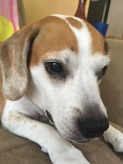

My Dog
This is my dog, Channi! (Also known as Chunk(y), Chooney, Pup, Channanini, Miss Stinky, and other aliases.) She is a 14-year-old beagle mix who is originally from the plains of Kansas but has called Philadelphia home for the past 10 years. She lives to eat and begs for a bite of everything her family eats. Her favorite foods are salmon, chicken, eggs, pizza, and spaghetti. In her younger years, she was much more active, going for long walks and playing with her rope. These days, she is retired and prefers to spend the day sleeping on the couch and occasionally going for a short walk. She’s been blind and mostly deaf for the past 3-4 years, but that doesn’t stop her from finding food that fell on the floor. She is truly an inspiration.